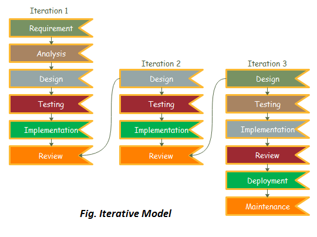

Iterative Development
Selles mudelis võite alustada mõne tarkvara spetsifikatsiooniga ja arendada esimest versiooni tarkvarast. Pärast esimest versiooni, kui on vaja tarkvara muuta, luuakse uus versioon tarkvarast uue iteratsiooniga. Iga iteratsiooni lõpetab Iteratiivne Mudel täpselt ja kindlaksmääratud perioodil, mida nimetatakse iteratsiooniks. Iteratiivne Mudel võimaldab juurdepääsu varasematele etappidele, milles vastavalt muudatusi tehakse. Projekti lõplik väljund uuendatakse tarkvaraarenduse elutsükli (SDLC) protsessi lõpus.

Iteratiivse mudeli erinevad faasid on järgmised:
- Nõuete kogumine ja analüüs: Selles faasis kogutakse nõuded klientidelt ning analüütik kontrollib, kas nõuded täidetakse või mitte. Analüütik kontrollib ka, kas vajadused saab täita eelarve piires või mitte. Kõigi nende sammude järel liigub tarkvarameeskond järgmisesse etappi.
- Disain: Disainifaasis kavandab meeskond tarkvara erinevate diagrammide abil, nagu andmevoo diagramm, tegevusdiagramm, klassidiagramm, olekuüleminekudiagramm jne.
- Rakendamine: Rakendamise faasis kirjutatakse nõuded programmeerimiskeelde ja need muudetakse arvutiprogrammideks, mida nimetatakse tarkvaraks.
- Testimine: Pärast programmeerimisfaasi lõpetamist alustatakse tarkvara testimist erinevate testimismeetodite abil. On mitmeid testimismeetodeid, kuid kõige levinumad on valge kasti, musta kasti ja halli kasti testimismeetodid.
- Paigaldamine: Pärast kõigi etappide lõpetamist paigaldatakse tarkvara selle töökeskkonda.
- Ülevaade: Selles faasis, pärast toote paigaldamist, viiakse läbi ülevaatuse faas, et kontrollida arendatud toote käitumist ja kehtivust. Kui leitakse vigu, siis protsess algab uuesti nõuete kogumisest.
- Hooldus: Hooldusfaasis, pärast tarkvara paigaldamist töökeskkonda, võivad tekkida mõned vead, mõned vead või olla vajalikud uued uuendused. Hooldus hõlmab veaotsimist ja uute valikute lisamist.
Iteratiivse mudeli eelised (plussid):
- Väiksemas iteratsioonis testimine ja tõrkeotsing on lihtne.
- Saab planeerida paralleelset arendust.
- See on kergesti vastuvõetav projekti pidevalt muutuvatele vajadustele.
- Riskid tuvastatakse ja lahendatakse iteratsiooni käigus.
- Dokumentatsioonile kulutatud aeg on piiratud ja disainile kulutatakse rohkem aega.
Iteratiivse mudeli puudused (miinused):
- See ei sobi väiksematele projektidele.
- Võib vajada rohkem ressursse.
- Disaini võib korduvalt muuta ebakindlate nõuete tõttu.
- Nõuete muudatused võivad viia üle-eelarvesse.
- Projekti lõpptähtaega ei saa kinnitada muutuvate nõuete tõttu.